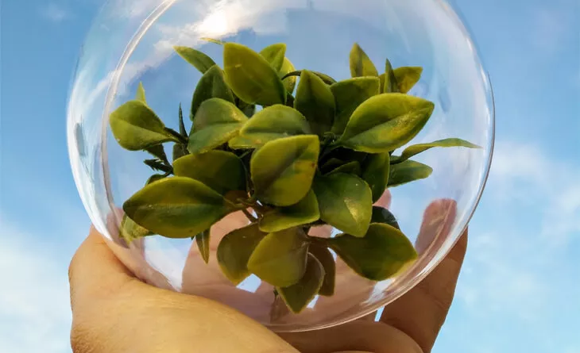

Por muito tempo, o termo sustentabilidade ambiental foi confundido com
preservação da natureza. Porém, por mais que conservar nossos recursos naturais
seja uma das premissas de um mundo mais limpo e saudável, o conceito de
crescimento sustentável é mais amplo e envolve também outras diretrizes.
Foi na década de 1980 que se estabeleceu a definição global do conceito de
desenvolvimento sustentável, marcando a relação entre a humanidade e o
ecossistema desde então.
Então, afinal, o que é sustentabilidade ambiental? É um conjunto de ações e
iniciativas que incluem desde órgãos governamentais e empresas privadas até os
cidadãos, em prol de um uso responsável e consciente dos recursos naturais.
Esse esforço coletivo visa trazer benefícios não só ao meio ambiente, mas também
a toda a sociedade. No Brasil, a importância da sustentabilidade ambiental é
ainda maior, visto que o país sofre com grande poluição, desmatamentos e
defasagem na reciclagem de lixo.
Pequenos passos, como a instauração de uma coleta seletiva, por exemplo, podem
ter impacto extremamente positivo no conjunto. É fundamental que todos estejamos
unidos para um desenvolvimento realmente sustentável. Para isso, vamos entender
um pouco mais sobre o tripé da sustentabilidade.
A frequente exploração desenfreada dos recursos naturais causa não somente
impactos na natureza, mas também influencia nossas relações sociais e
econômicas. Enchentes em áreas urbanas ou mais afastadas, por exemplo, têm
consequências, muitas vezes, devastadoras devido à interferência humana.
Essas consequências vão desde comércios baixarem as portas até famílias que já
vivem em situação de vulnerabilidade social ficarem desabrigadas. Assim, é de
suma importância entendermos que, para haver sustentabilidade ambiental,
devemos alinhar os três pilares que a compõem.
O consumo desenfreado dos recursos disponíveis na natureza pela humanidade
acarreta esgotamento deles e afeta diretamente as relações sociais, econômicas e
ambientais. Por isso, é fundamental usar os recursos naturais para suprir as nossas
demandas sem comprometer as necessidades das próximas gerações.
Algumas marcas levam o assunto sustentabilidade ambiental como valor dentro da
própria empresa. Pensando a curto, médio e longo prazo, é a forma como buscam
crescimento econômico de forma sadia.
Há empresas que praticam um conjunto de ações que visam alcançar o bem-estar
do consumidor e agregar valor à forma como o público a enxerga. Nesse sentido, o
processo de sustentabilidade começa na seleção consciente dos elementos
utilizados na produção.
Não se atendo apenas à produção, marcas têm ido além no engajamento com o
meio ambiente. Assim, a distribuição se tornou um fator importante para planejar de
forma sustentável. Um exemplo disso é o sistema de distribuição reversa, que faz a
embalagem de diversos produtos retornar à empresa após o consumo.
É imprescindível que características como a solidariedade e a humanidade façam
parte da nossa rotina, pois, fazendo escolhas saudáveis, não impactamos as outras
pessoas de forma negativa.
Podemos dizer que um lixo descartado de forma incorreta, por exemplo, não afeta
apenas o meio ambiente, mas ocasiona em enchentes que, nas áreas urbanas,
fazem famílias perderem móveis ou até mesmo a moradia.
Dessa forma, a preocupação com a natureza gera uma melhor qualidade de vida na
sociedade como um todo. Porém, para atingirmos essa prática, é necessário pensar
nossas ações de maneira coletiva e consciente. No Brasil, por exemplo, contamos
com algumas leis que visam à proteção ambiental.
Com a rápida transformação dos solos, águas, atmosfera e até dos animais, foi
necessário implementar ações positivas em prol do desenvolvimento sustentável.
Nesse sentido, as leis servem como um importante mecanismo de defesa do meio
ambiente e têm também a finalidade de assegurar uma existência digna para o
homem, com boa qualidade de vida na terra para todos os seres que a habitam.
O artigo 225 da Constituição Federal Brasileira propõe o direito comum ao meio
ambiente ecologicamente equilibrado e impõe o dever de defendê-lo e preservá-lo
ao poder público e à coletividade.
Para garantir que as leis ambientais do ordenamento jurídico brasileiro sejam
cumpridas, foi sancionada a Lei 9.605, de 12 de fevereiro de 1998, que dispõe sobre
as sanções penais e administrativas em relação a danos causados ao meio
ambiente brasileiro.
Ainda assim, sabe-se que o tema deixou de ser apenas uma causa importante para
organizações governamentais e se tornou assunto global, envolvendo todos os
segmentos. Porém, a discussão entre empresas e governos sobre um crescimento
sustentável, ainda está longe de atingir uma solução. Portanto, como cidadãos
Um passo simples e fácil para começar a ajudar o meio ambiente é saber os 3 Rs,
você conhece? Os 3 Rs são: reduzir, reutilizar, reciclar. São ações cotidianas que
colaboram muito para um mundo mais sustentável.
Para reduzir, você pode, por exemplo, imprimir menos folhas ou evitar usar
impressos. Para reutilizar, você pode pegar caixas de leite e reaproveitá-las como
um porta-canetas. Já para reciclar, separe sempre o lixo de forma adequada em
lixeiras recicláveis.